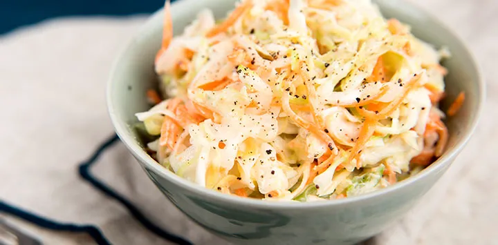

Ensalada de col o "coleslaw"
Ingredientes
1/4 col blanca
1 zanahoria
1/2 de manzana
Para la salsa
2 cucharadas soperas de yogur natural
1 cucharada sopera de mayonesa
1 cucharadita de postre de mostaza
1 cucharada sopera de vinagre
Una pizca de sal
1 cucharadita de postre de azúcar
Pimienta negra recién molida (opcional)
